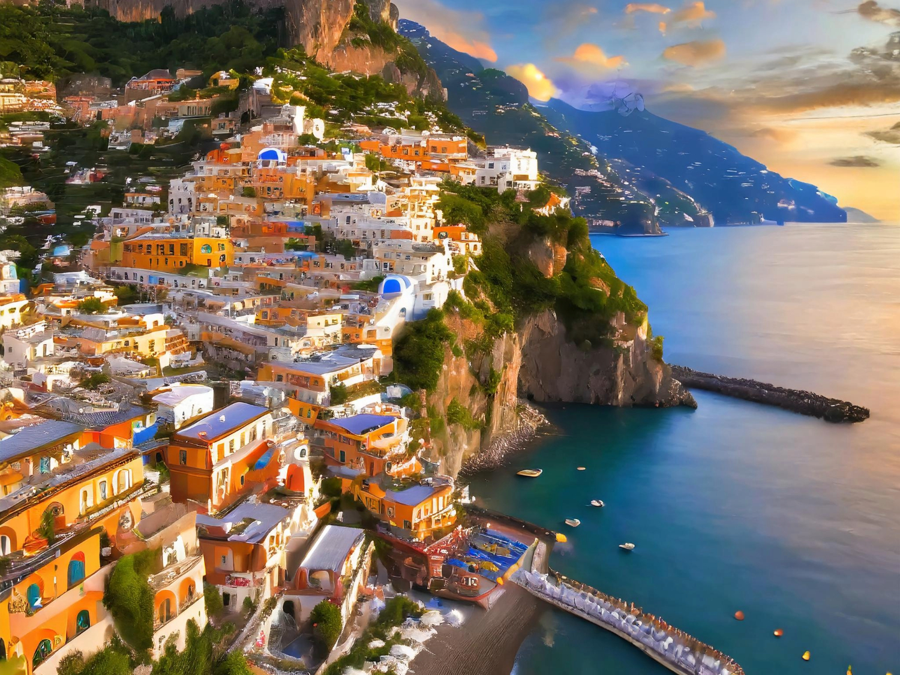
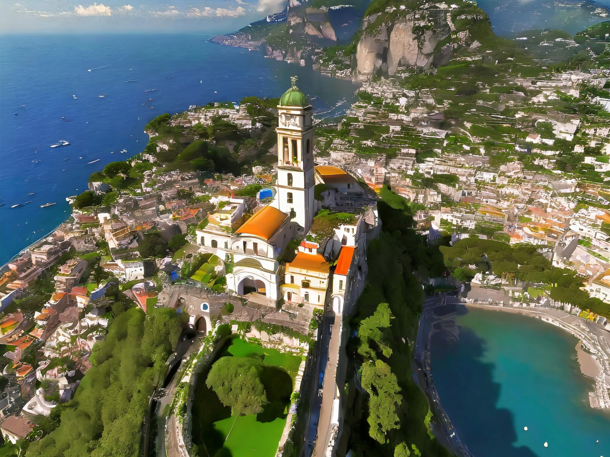
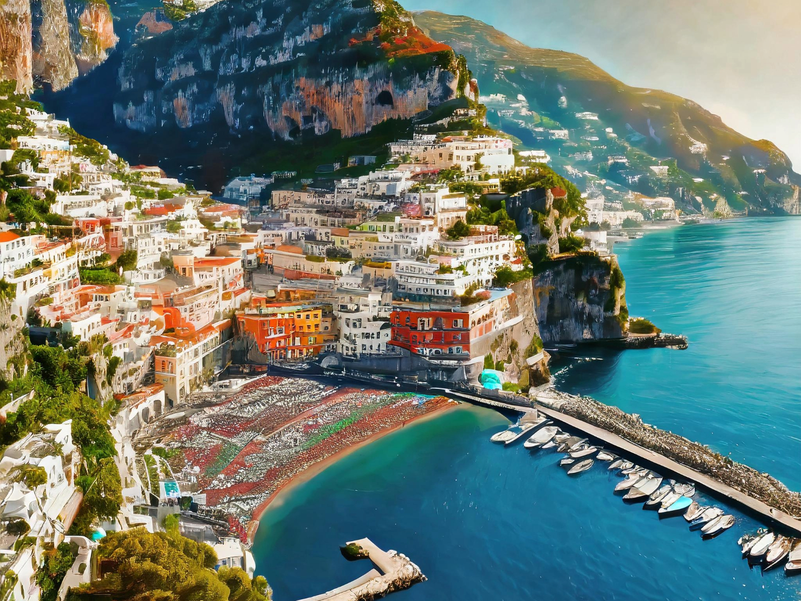
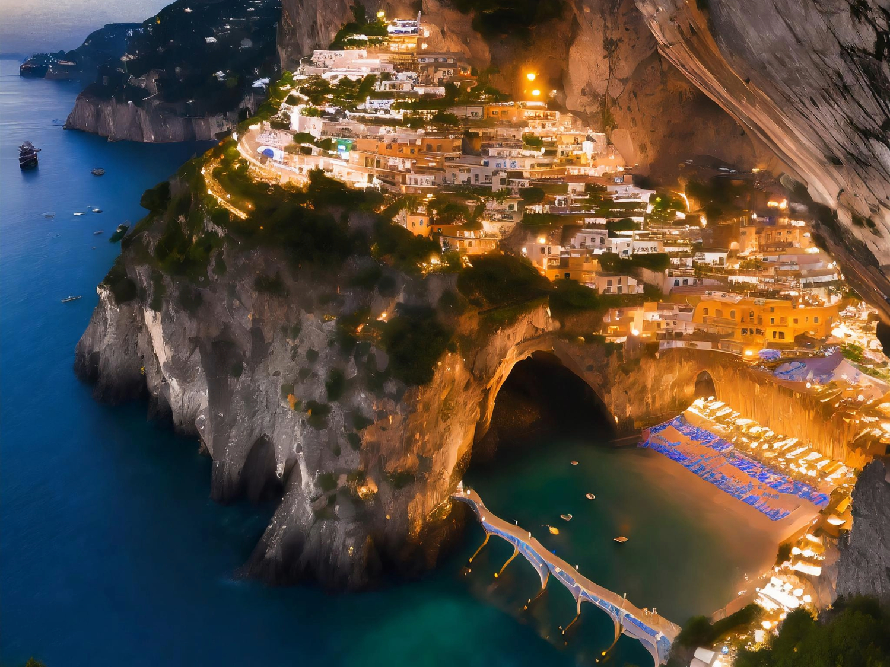

Voyage Explorer

Découvrez les trésors secrets de la côte amalfitaine, des villages pittoresques aux falaises spectaculaires...
Positano est l'un des villages les plus emblématiques de la côte amalfitaine, avec ses maisons colorées qui descendent en cascade jusqu'à la mer Méditerranée.
Ravello est un joyau perché sur une colline offrant des vues panoramiques à couper le souffle sur la côte amalfitaine, ainsi que de magnifiques jardins et villas historiques.
La ville d'Amalfi est le cœur historique de la côte amalfitaine, avec sa cathédrale majestueuse et ses ruelles pittoresques bordées de boutiques artisanales.
Les grottes de Positano offrent une expérience unique, avec leurs formations rocheuses fascinantes et leurs eaux turquoise parfaites pour la plongée.

Commentaires
Maria Rossi - 15 avril 2024
La côte amalfitaine est vraiment à couper le souffle, chaque village a son charme unique !
Giovanni Bianchi - 29 avril 2024
Les saveurs de la cuisine italienne à Amalfi sont un véritable délice pour les papilles !
Ajouter un commentaire